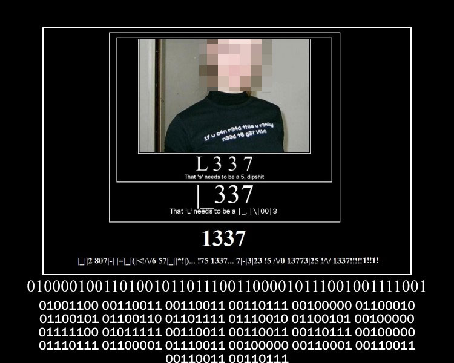

1337 speak
so leet speak aka 1337 speak started around the 80s on early chat rooms which were called bulletin board systems. the basic idea is replacing letters w numbers or other characters
it isnt confirmed but ppl think it came about as a way fr hackers to prevent their posts from being found thru keyword searches
it got popular in the 90s on early online multiplayer games lk doom n took off from there
the idea is p straightforward but there were some grammar n phrase additions
aside
leet is a little bit b4 my time on the web bc im a Millennial so i didnt use computers until i was in middle school n by that time the web was in fully engulfed in the image macro style. that said leet still has ripples in web culture lk when i would go on pet websites (u will hear abt this later ok) items would often have references to leet either the word or the number version
grammar
the name leetspeak is a modified spelling of elite it often is represented as 1337 which appears in a lot of spaces on the web as an internet injoke
there were a bunch of phrase additions to the web lexicon these r the most important -> pwn (own) which means to win at something hax0r (hacker) someone to be feared because of their skill n00b (newbie) beginner or poor player
lenny sucks
lenny suxxorz
lenny is t3h suxx0rz
101 13nny 15 73h 5uxx022
L0L L3[\][\]Y 15 T3H SUXX0R2
101 13|V|V7 15 73|-| 5(_)><><022
101 13|\\||\\|`/ !5 +3|-| 5|_|%%0|27_
|_[]|_ |_[-|\||\|`/ !$ ‘|’[-# $|_|)()([]/27_
|_0£ [_3|\|/V¥ !5 7€(-) _/¯L|)()(0/2>_
707 |_&|\|[\]¥ !5 7&]-[ $|_|%><0|^~/_
|_0|_ |_3|\\||\\|`/ !5 73|-| 5(_)><><0|22
letter dropping / adding patterns and abbreviations have always been integral to webspeak and leet is no different in fact it’s basically the most important part of leet
it’s letter substitution was fundamental to leet’s grammar structure bc emphasis was usually indicated by how elaborate converted a sentence was
pictured are some of the most common letter conversions in leet although this is not by any means all of them as mentioned creativity and illegibility was a major to component to this style it’s also worth noting that certain letters having overlapping conversions which def makes translation more difficult and dependant on context
this is also the first time on the web where we see ‘teh’ the misspelling of ‘the’ being used (it was a big deal in lolspeak)
also common was the dropping of the ‘e’ in ‘-ed’ sometimes it would b replaced w an apostrophe instead lk owned becomes pwnd or pwn’d
new suffixes n new pairings started to surface which gave leet it’s well known sound
suffixes include ‘-ness’ ‘-age’ ‘-xor’ ex awesomeness pwnage haxor
also popular was replacing the long vowel sound for ‘o’ w 00 lk d00d (dude) or j00 (you)
legacy
most of the phrases from leet speak have faded into the tapestry of the internet altho the trend of replacing letters fr numbers has come in n out of popularity since then
leet still appears in pop culture fr ex being used in titles fr the show ‘mr robot’ which is abt hackers
a few of the phrases in leet also were assimilated into webspeak probably most notably noob which is still a v popular term for a new player in a video game